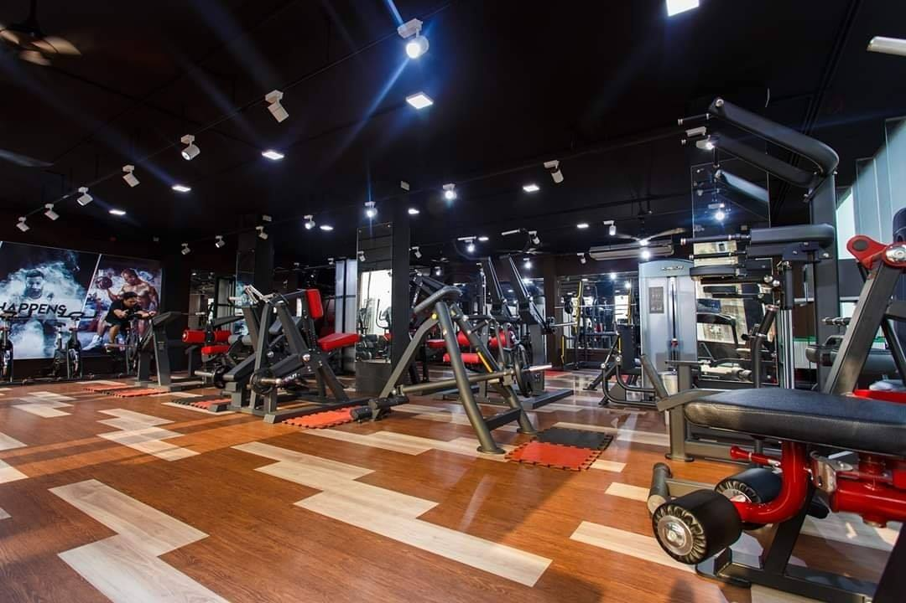
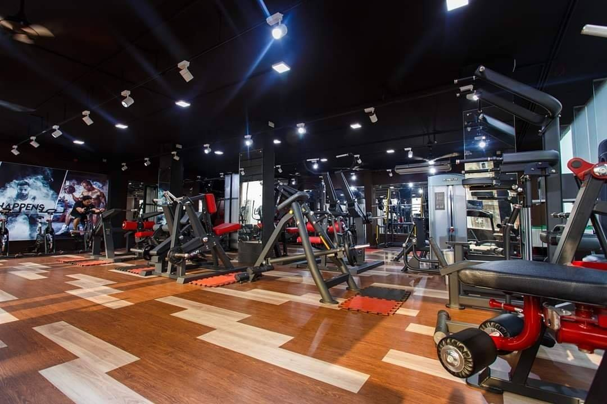

Cherry Drops Fitness & Life Style
Improve your health
Regular exercise and physical activity promotes strong muscles and bones. It improves respiratory, cardiovascular health, and overall health. Staying active can also help you maintain a healthy weight, reduce your risk for type 2 diabetes, heart disease, and reduce your risk for some cancers.
We have all heard it many times before - regular exercise is good for you, and it can help you lose weight. But if you are like many Americans, you are busy, you have a sedentary job, and you haven't yet changed your exercise habits. The good news is that it's never too late to start. You can start slowly, and find ways to fit more physical activity into your life. To get the most benefit, you should try to get the recommended amount of exercise for your age. If you can do it, the payoff is that you will feel better, help prevent or control many diseases, and likely even live longer.
Yous Can Start Your Daily Workout In Cherry Drops Fitness & Life Style
 

FACEBOOK
To learn more contact us :01610-021342
email :
cherrydropsfitness@gmail.com